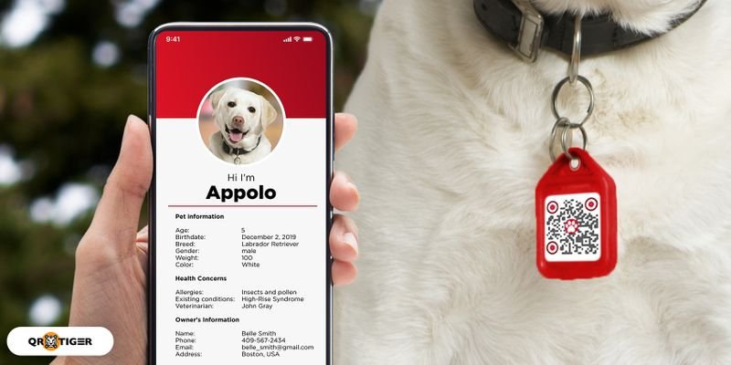

Tecnologia
La empresa PetScan utiliza tecnología innovadora para facilitar el rescate y la seguridad de los animales a través del escaneo de códigos QR. Los códigos QR son códigos de barras bidimensionales que almacenan información y se pueden escanear con un dispositivo móvil. En el caso de PetScan, estos códigos se incorporan en collares especiales para mascotas. Cuando una mascota se pierde o necesita ayuda, cualquier persona puede escanear el código QR en el collar con su teléfono inteligente. Este escaneo proporciona acceso inmediato a información vital sobre la mascota, como su nombre, información de contacto del propietario, alergias o afecciones médicas. Esto permite una respuesta rápida y efectiva en situaciones de emergencia, ya que las personas pueden comunicarse directamente con el propietario y coordinar el rescate o la asistencia necesaria. La tecnología utilizada por PetScan no solo brinda tranquilidad a los propietarios de mascotas, sino que también agiliza los procesos de rescate. Al eliminar la necesidad de buscar microchips o identificaciones tradicionales, el escaneo de los códigos QR acelera la identificación y la devolución de las mascotas perdidas a sus hogares. Además, esta tecnología promueve la concientización sobre la importancia de mantener a las mascotas protegidas y fomenta una comunidad colaborativa en la que los vecinos pueden ayudarse mutuamente en situaciones de emergencia animal. En resumen, la tecnología de PetScan brinda una solución eficiente y efectiva para mejorar la seguridad y el bienestar de las mascotas en nuestra sociedad.
